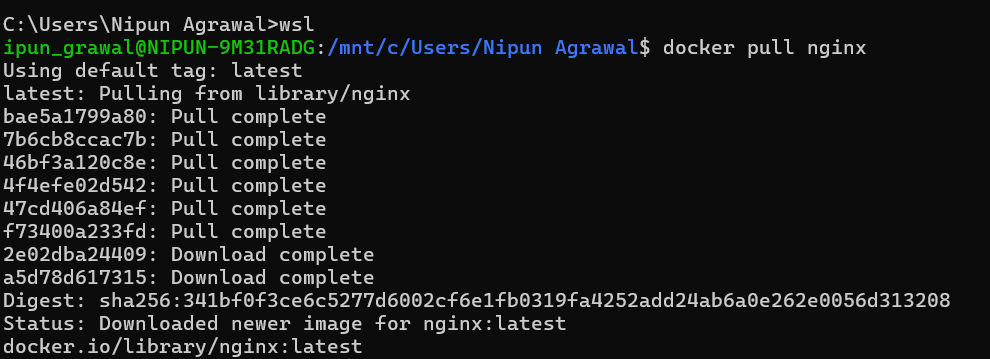
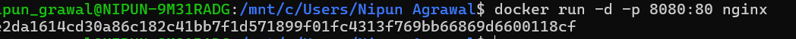
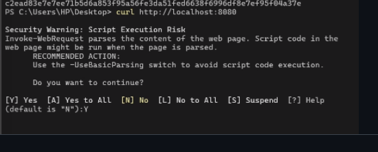
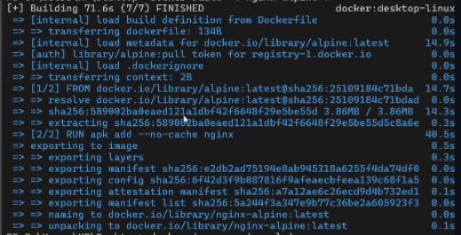
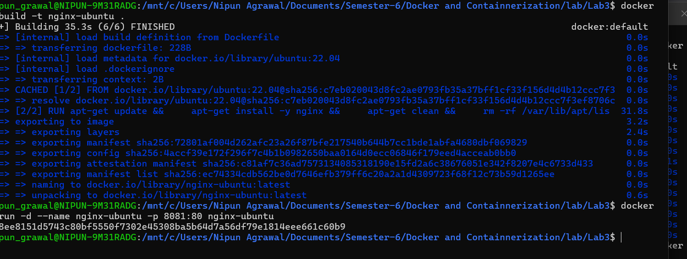
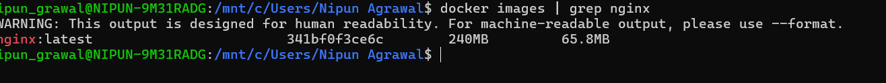
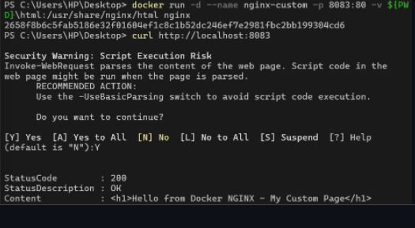
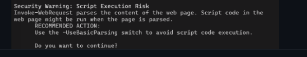
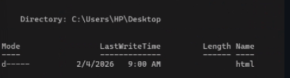

Deploying NGINX Using Different Base Images
Name: Nipun Agrawal
Roll No: R2142230048
SAP ID: 500119472
University: UPES Dehradun
Deploy NGINX using different Docker base images and compare size, layers, performance, and security.









NGINX is a high-performance web server, reverse proxy, and load balancer.
Docker packages applications with dependencies into containers for portability.
Each Dockerfile instruction creates a layer. More layers increase size and reduce performance.
| Base Image | Description |
|---|---|
| Official | Optimized production image |
| Ubuntu | Full OS with tools |
| Alpine | Lightweight Linux |
docker pull nginx
docker run -d -p 8080:80 nginx
FROM ubuntu:22.04
RUN apt-get update && apt-get install -y nginx
docker build -t nginx-ubuntu .
FROM alpine:latest
RUN apk add --no-cache nginx
docker build -t nginx-alpine .
docker images
| Image | Size |
|---|---|
| nginx | ~140MB |
| nginx-ubuntu | ~220MB |
| nginx-alpine | ~25MB |
docker history nginx
docker run -p 8083:80 -v $(pwd)/html:/usr/share/nginx/html nginx
| Feature | Official | Ubuntu | Alpine |
|---|---|---|---|
| Size | Medium | Large | Small |
| Speed | Fast | Slow | Very Fast |
| Security | Medium | Low | High |
Alpine is lightweight and fast. Official images are stable. Ubuntu is heavy and slower.